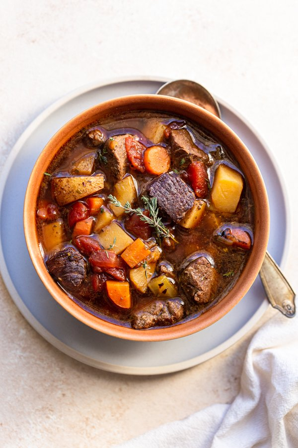

Delicious Venison Stew

Amazing Homemade Easy to Make Vension Stew
You're looking at your chest freezer full of last hunting season's
harvest. Wondering what you should make? Do you have at least a pound
of venison? I've got a recipe for you.
This easy to make stew is perfect for any venison lover. It
also can be made with beef too. This recipe really makes the meat
tender and fall apart in your mouth. One thing to make sure while
you are prepping the meat is to remove all sinew. Once you taste
this stew, you'll want to keep making it over and over.
Ingredients (yeilds 6-8 servings)
- 1 pound venison, diced with all sinew removed
- 1 tablespoon olive oil
- 2 1/2 cups dice potatoes (skin or no skin), about 3 medium potatoes
- 2 cups diced carrots
- 1 cup diced celery
- 1 large onion
- 2 garlic cloves, minced
- 2 teaspoons herbs de Provence
- 1 teaspoon salt
- 3/4 teaspoon black pepper
- 1 (15 ounces) can diced tomatoes
- 4 cups unsalted beef stock or venison stock
- 3-4 dashes Worcestershire sauce
Directions
- Dice the venison into bite-sized chunks, being sure to remove any of the silvery sinew tissue.
Leaving this on makes the meat tough.
- Add the olive oil to a large pot or dutch oven and heat over medium-high heat.
In a mixing bowl, combine ricotta cheese with egg, remaining parsley, and 1/2 teaspoon salt.
- When the oil is hot, allow the venison to saute for 5-7 minutes or until the edges start to brown.
Remove the venison from the pot and set aside.
- Turn the heat down to medium and add the potatoes, carrots, celery, and onion.
Allow the vegetables to saute for about 8-10 minutes, or until they begin to soften.
- Then, add the garlic, herbs de Provence, salt, and pepper, and cook for an additional minute before adding the tomatoes,
broth, and Worcestershire sauce. Then, add the venison back to the pot.
Stir well and bring the stew to a boil.
- Once a boil is reached, turn the heat to low, cover the pot with a lid,
and allow the stew to simmer for 1-2 hours until the venison is tender.
- Serve hot and if you want to take it up a notch, serve with a nice crusty bread.